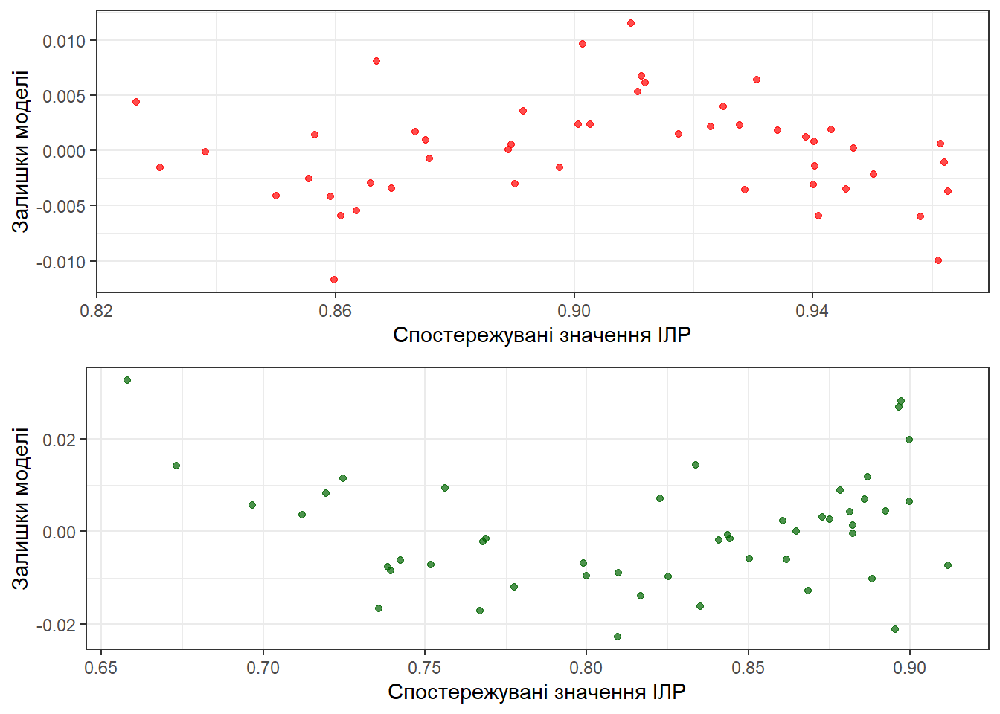

Курсова робота по економетриці на тему: Дослідження впливу різних факторів на рівень людського розвитку
Мета: дослідит вплив різних факторів на рівень людського розвитку, використовуючи мову програмування R та датасет Human Development Index Dataset, знайти та побудувати модель МЛР за методом МНК, що буде найкращою з точки зору прогнозування та інтерпритації, перевірити на гетероскедастичність та прибрати чи зменшити її вплив на точність моделі. Перевірити результат та зробити висновки
Автор
Oleksandr Neschasnij
Дата публікації
May 19, 2023
Вступ
У зростаючої епохи глобалізації та технологічного розквіту, людський розвиток стає предметом все більшої уваги для наукових дослідників, політиків та громадськості загалом. З давніх часів людство постійно намагається покращити умови свого життя та досягнути нових вершин.
Людський розвиток є взаємопов’язаним з багатьма факторами як економічний прогрес, соціальні зміни, політичну стабільність, наукові дослідження та культурний розвиток, а також включає в себе забезпечення основних потреб людей, таких як доступ до якісної освіти, охорони здоров’я, житла та безпеки. Проте потрібно розуміти що, розвиток не обмежується лише матеріальними аспектами, а також визначається якістю життя, рівнем освіти, культурними цінностями та взаємними відносинами у суспільстві. В умовах сучасного світу, людський розвиток вимагає неустанного пошуку нових рішень, інновацій та стратегій для вирішення сучасних викликів.
Індекс людського розвитку(ІЛР або індекс розвитку людського потенціалу(ІРЛП)) — інтегральний показник, що розраховується щорічно для міждержавного порівняння і вимірювання рівня життя, грамотності, освіченості і довголіття, як основних характеристик людського потенціалу досліджуваної території.
Індекс розроблено і введено в обіг у 1990 р. пакистанським економістом Махбубом-уль-Хаком і використовується ООН з 1993 р. у звітах про розвиток потенціалу людини. Використовується як статистичний інструмент для порівняння розвитку соціальної сфери різних країн. Зміст показника полягає в такому: чим ближче ІЛР до одиниці, тим вищі можливості для реалізації людського потенціалу завдяки поліпшенню рівня освіти, доходу і тривалості життя.
Мета: Дослідити вплив різних показників на індекс розвитку людини, перевірити чи присутня нерівність серед чоловіків та жінок, що спричиняє зниження ІПРЛ, дослідити чи може тренд ІЛР вплинути на результат моделі МЛР.
Об’єкт дослідження: База даних, що містить інформацію про індекс людського розвитку:
read_file
# A tibble: 191 × 20
Country Human Development In…¹ Life expectancy at b…² Expected years of sc…³
<chr> <dbl> <dbl> <dbl>
1 Switzer… 0.962 84.0 16.5
2 Norway 0.961 83.2 18.2
3 Iceland 0.959 82.7 19.2
4 Hong Ko… 0.952 85.5 17.3
5 Austral… 0.951 84.5 21.1
6 Denmark 0.948 81.4 18.7
7 Sweden 0.947 83.0 19.4
8 Ireland 0.945 82.0 18.9
9 Germany 0.942 80.6 17.0
10 Netherl… 0.941 81.7 18.7
# ℹ 181 more rows
# ℹ abbreviated names: ¹`Human Development Index (HDI)`,
# ²`Life expectancy at birth`, ³`Expected years of schooling`
# ℹ 16 more variables: `Mean years of schooling` <dbl>,
# `Gross national income (GNI) per capita` <dbl>,
# `GNI per capita rank minus HDI rank` <dbl>, `HDI rank` <dbl>, `1990` <dbl>,
# `2000` <dbl>, `2010` <dbl>, `2015` <dbl>, `2018` <dbl>, `2019` <dbl>, …
Показник
Коротке пояснення
Human Development Index
Комплексний індекс, який відображає рівень людського розвитку країни за такими показниками, як очікувана тривалість життя, рівень освіти та дохід на душу населення.
Life expectancy at birth
Середня тривалість життя при народженні.
Expected years of schooling
Середня очікувана тривалість навчання в країні на момент народження.
Mean years of schooling
Середня кількість років навчання, отримана усіма людьми, які стали дорослими у країні.
Gross national income (GNI) per capita
Річний дохід на душу населення.
GNI per capita rank minus HDI rank
Індекс, який відображає рівень розриву між доходами населення та їх рівнем людського розвитку у порівнянні з іншими країнами.
HDI rank
Позиція країни у рейтингу HDI.
Maternal mortality ratio
Смертність матері при народженні дитини, на 10 тис.
Share of seats in parliament
Кількість місць у жінок у парламенті
Female labour force participation rate
Оцінка робочої зайнятості жінок
Male labour force participation rate
Оцінка робочої зайнятості чоловіків
Також одразу потрібно перевірити чи наявні у датасеті NA, тобто пусті клітинки, що не містять інформації та завадять майбутнім дослідженням.
anyNA(read_file)
[1] TRUE
Результат при виводі коду— TRUE, отже у БД є відсутні значення. Вирішенням для цієї проблеми— функція na_interpolation, що заповнить пропуски, орієнтуючись на попередні показники.
Предмет дослідження: алгоритм Уорда, дендрограми, побудовані для кластерного аналізу; моделі, побудовані методом найменших квадратів; тест Уайта для дослідження гетероскедастичності; тест Дарбіна-Уотсона для перевірки автокореляції.
Кластерний аналіз
Кластерний аналіз - це метод машинного навчання, що використовується для розділення групи об’єктів на підгрупи або кластери на основі схожості між ними.
Кластер - це група об’єктів або спостережень, які мають схожі характеристики або властивості. ## Знаходження оптимальної кількості кластерів
Перед початком стандартизуємо показники, оскільки у більшості є інші системи вимірювання, що в майбутньому може вплинути на ефективність моделі
Запускаємо алгоритм Уорда, що полягає в послідовному об’єднанні пар кластерів, що мають найменшу внутрішньокластерну варіацію, досягаючи побудови ієрархічної структури кластерів. Починаючи з кожного об’єкту як окремого кластера, алгоритм поступово об’єднує два найбільш схожих кластери, продовжуючи цей процес до отримання одного великого кластера, що об’єднує всі об’єкти.
Метод ліктя базується на графічному аналізі залежності між кількістю кластерів і сумою квадратів відстаней (внутрішньокластерних варіацій) між об’єктами і їхніми центрами кластерів. Цей метод надає інтуїтивний спосіб вибору кількості кластерів, орієнтуючись на точці, де крива перестає стрімкий спуск.
За даним методом кількість кластерів дорівнює 3-ом
Силуетний метод дозволяє порівнювати різні алгоритми кластеризації та вибирати оптимальну кількість кластерів. Вибір кластерів з найвищими значеннями показника силуету вказує на найкращу кількість кластерів для даного набору даних.
За даним методом кількість кластерів дорівнює 2-ом
Гап-статистика дозволяє порівнювати дисперсію внутрішнього кластерування даних з дисперсією, яка була б спостережена випадковим чином. Оптимальне значення кількості кластерів буде там, де різниця між цими двома дисперсіями буде максимальною.
За даним методом кількість кластерів дорівнює 3-ом
Отримавши 3 групи країн, визначемо, який кластер має високий ІРЛ, а який низький. За допомогою алгоритму K-середніх, що намагається знайти центроїди(середнє арифметичне всіх об’єктів, призначених до певного кластеру.), що мінімізують сумарну квадратичну відстань між об’єктами і їхніми центроїдами.
Висновок: переглянувши результати кластерного аналізу, спостерігаємо адекватний розподіл країн між групами. Далі проведемо дослідження та перегляном різницю впливу різних факторів на країни з низьким та високим ІРЛ.
Побудова МЛР за МНК
Метод найменших квадратів— статистичний методом, який використовується для оцінювання параметрів математичної моделі шляхом мінімізації суми квадратів розбіжностей між спостережуваними значеннями і передбаченими значеннями моделі.
Рівняння прямої виглядає наступним чином:
\[
y_i= \beta_0 + \beta_1x_1 + \beta_2x_2 + ...+ \beta_nx_m+ \beta_{n+1}x_{m+1}+ u_i
\] Це рівняння називається множинною лінійною регресією.
Розглянемо складові рівняння:
\(y\): залежна змінна.
\(\beta_0\): вільний параметр моделі, який відповідає за точку перетину прямої з вістю ординат.
\(\beta_{1,2,...,n,n+1}\): залежні параметри моделі, який відповідає за кут нахилу прямої.
\(x_{1,2,...,m,m+1}\): незалежні змінні.
\(u\): залишки моделі.
Але у нашому розпорядженні є тільки певна вибірка даних і провести ідеальну пряму через всі точки неможливо. Тому необхідно розрахувати оцінки параметрів моделі, які будуть задовільняти нас:
\[
y_i= \hat{\beta}_0 + \beta_1x_1 + \hat{\beta}_2x_2 + ...+ \hat{\beta}_nx_m+ \hat{\beta}_{n+1}x_{m+1}+ u_i
\] Оцінки параметрів моделі \(\hat{\beta_0}\) та \(\hat{\beta_{1,2,...,n,n+1}\) будуть дорівнювати:
\[
\left\{\begin{matrix}
\hat{\beta_0} = \overline{y} - \hat{\beta_1}\overline{x} & \\
\hat{\beta}_{1,2,...,n,n+1} = \frac{\sum\limits^{n}_{i=1,2,...,m,m+1}(x_i - \overline{x})(y_i - \overline{y})}{\sum\limits^{n}_{i=1}(x_i - \overline{x})^2} = \frac{\overline{xy} - \overline{x}\overline{y}}{\overline{x^2} - \overline{x}^2}
\end{matrix}\right.
\] Проте мова програмування R надає нам чудову функцію lm(), яка дозваляє уникнути створення моделі за МНК по кроково, а функція summary() виводить додаткову інформаю про модель, у тому числі оцінку коефіцієнтів.
t-критерій— тест, який використовується у статистиці для перевірки гіпотез про значимість різниці між середніми значеннями двох груп. T-критерій базується на розподілі Стьюдента, що залежить від ступенів свободи (degrees of freedom) і рівня значимості.
F-критерій— це статистичний критерій, що використовується для порівняння дисперсії між двома або більше вибірками. В контексті лінійної регресії F-критерій використовується для оцінки важливості регресійної моделі в цілому.
p-значення— це ймовірність отримати спостережуване значення статистики, якщо нульова гіпотеза є правильною.
Коефіцієнт детермінації — коефіцієнт, що вказує на частину варіації залежної змінної , що пояснюється регресійною моделлю. Лежить в діапазоні від 0 до 1. Значення 0 означає, що регресійна модель не може пояснити жодну варіацію залежної змінної, тоді як значення 1 вказує, що модель повністю пояснює варіацію залежної змінної.
Довірчі інтервали— це інтервал значень, що містить обраний параметр з ймовірністю 97.5% на рівні значущості 0.05.
Побудова моделі країн з високим ІЛР
Використовуємо ІЛР як залежну змінну, а як незалежні: середня тривалість життя; середня очікувана тривалість навчання в країні на момент народження; середня кількість років навчання, отримана людьми; річний дохід на душу населення.
highHDI_lm <-lm(`Human Development Index (HDI)`~`Life expectancy at birth`+`Expected years of schooling`+`Mean years of schooling`+`Gross national income (GNI) per capita`+`HDI rank`, data = highHDI) summary(highHDI_lm)
Call:
lm(formula = `Human Development Index (HDI)` ~ `Life expectancy at birth` +
`Expected years of schooling` + `Mean years of schooling` +
`Gross national income (GNI) per capita` + `HDI rank`, data = highHDI)
Residuals:
Min 1Q Median 3Q Max
-0.0274768 -0.0044989 0.0007041 0.0049578 0.0166004
Coefficients:
Estimate Std. Error t value Pr(>|t|)
(Intercept) 3.601e-01 7.608e-02 4.733 1.00e-05
`Life expectancy at birth` 3.415e-03 4.781e-04 7.143 4.72e-10
`Expected years of schooling` 7.516e-03 1.208e-03 6.220 2.48e-08
`Mean years of schooling` 7.478e-03 1.128e-03 6.631 4.31e-09
`Gross national income (GNI) per capita` 2.299e-06 3.740e-07 6.147 3.38e-08
`HDI rank` -7.942e-04 1.843e-04 -4.309 4.85e-05
(Intercept) ***
`Life expectancy at birth` ***
`Expected years of schooling` ***
`Mean years of schooling` ***
`Gross national income (GNI) per capita` ***
`HDI rank` ***
---
Signif. codes: 0 '***' 0.001 '**' 0.01 '*' 0.05 '.' 0.1 ' ' 1
Residual standard error: 0.007809 on 76 degrees of freedom
Multiple R-squared: 0.9808, Adjusted R-squared: 0.9796
F-statistic: 777.5 on 5 and 76 DF, p-value: < 2.2e-16
Оцінка ефективності моделі
t-критерій: Для початку застосовуємо функцію qt(), що повертає критичне значення (квантиль) t-розподілу.
abs(qt(0.01, 76))
[1] 2.37642
Робимо висновок, що усі коефіцієнти мають значення t-критерію, модуль яких більший за 2.37642, що дозволяє прийняти гіпотезу про значущість змінних;
F-критерій: значення досить високе (777.5), що підтверджує наявність статистично значущого взаємозв’язку між змінними;
p-значення: значення дуже мале, що свідчить про наявність статистично значущого взаємозв’язку між факторами в моделі;
Коефіцієнт детермінації: 98%(0.9808), а скоригований коефіцієнт детермінації: 98%(0.9796), що свідчить про майже ідеальну
Довірчі інтервали:
confint(highHDI_lm)
2.5 % 97.5 %
(Intercept) 2.085372e-01 5.115764e-01
`Life expectancy at birth` 2.462705e-03 4.367148e-03
`Expected years of schooling` 5.109428e-03 9.922421e-03
`Mean years of schooling` 5.232002e-03 9.723957e-03
`Gross national income (GNI) per capita` 1.553830e-06 3.043439e-06
`HDI rank` -1.161312e-03 -4.271346e-04
На основі наданих довірчих інтервалів, можна стверджувати, що всі вказані коефіцієнти регресії є статистично значущими, оскільки їхні довірчі інтервали не включають нуль
ggplot(data = highHDI, aes(x =`Human Development Index (HDI)`, y =predict(highHDI_lm))) +geom_point(shape =20, colour ="blue", size=5) +geom_smooth(method ="lm", se =FALSE, color ="red") +labs(x ="Фактичні значення HDI", y ="Прогнозовані значення HDI", title ="Діаграма розсіювання для моделі МЛР")
`geom_smooth()` using formula = 'y ~ x'
Перевірка впливу статі на модель
Додаємо до моделі змінні: участь жінки у роботі, смертність від народження дитини, кількість зайнятих місць жінками у парламенті.
highHDI_lm_female <-lm(`Human Development Index (HDI)`~`Life expectancy at birth`+`Expected years of schooling`+`Mean years of schooling`+`Gross national income (GNI) per capita`+`HDI rank`+`Female labour force participation rate`+`Share of seats in parliament`+`Maternal mortality ratio`, data = highHDI) summary(highHDI_lm_female)
Call:
lm(formula = `Human Development Index (HDI)` ~ `Life expectancy at birth` +
`Expected years of schooling` + `Mean years of schooling` +
`Gross national income (GNI) per capita` + `HDI rank` + `Female labour force participation rate` +
`Share of seats in parliament` + `Maternal mortality ratio`,
data = highHDI)
Residuals:
Min 1Q Median 3Q Max
-0.021074 -0.003719 0.001194 0.004650 0.017719
Coefficients:
Estimate Std. Error t value Pr(>|t|)
(Intercept) 3.442e-01 7.564e-02 4.551 2.09e-05
`Life expectancy at birth` 3.559e-03 4.906e-04 7.253 3.53e-10
`Expected years of schooling` 7.476e-03 1.203e-03 6.214 2.88e-08
`Mean years of schooling` 7.752e-03 1.126e-03 6.887 1.69e-09
`Gross national income (GNI) per capita` 2.374e-06 3.682e-07 6.446 1.09e-08
`HDI rank` -7.776e-04 1.805e-04 -4.307 5.07e-05
`Female labour force participation rate` -1.011e-04 6.828e-05 -1.480 0.1432
`Share of seats in parliament` 1.737e-04 7.467e-05 2.326 0.0228
`Maternal mortality ratio` 1.820e-05 2.454e-05 0.741 0.4608
(Intercept) ***
`Life expectancy at birth` ***
`Expected years of schooling` ***
`Mean years of schooling` ***
`Gross national income (GNI) per capita` ***
`HDI rank` ***
`Female labour force participation rate`
`Share of seats in parliament` *
`Maternal mortality ratio`
---
Signif. codes: 0 '***' 0.001 '**' 0.01 '*' 0.05 '.' 0.1 ' ' 1
Residual standard error: 0.007628 on 73 degrees of freedom
Multiple R-squared: 0.9824, Adjusted R-squared: 0.9805
F-statistic: 510.1 on 8 and 73 DF, p-value: < 2.2e-16
Згідно статистичним показникам низький t-критерій та високе p-значення свідчить про статистичну незначущість факторів: участь жінки у роботі, смертність від народження дитини.
confint(highHDI_lm_female)
2.5 % 97.5 %
(Intercept) 1.934444e-01 4.949311e-01
`Life expectancy at birth` 2.580829e-03 4.536506e-03
`Expected years of schooling` 5.078403e-03 9.874255e-03
`Mean years of schooling` 5.508733e-03 9.995383e-03
`Gross national income (GNI) per capita` 1.639735e-06 3.107543e-06
`HDI rank` -1.137470e-03 -4.178225e-04
`Female labour force participation rate` -2.371398e-04 3.503594e-05
`Share of seats in parliament` 2.487205e-05 3.224955e-04
`Maternal mortality ratio` -3.071233e-05 6.710246e-05
На основі довірчих інтервалів, можна стверджувати, що всі вказані коефіцієнти регресії, окрім кількості місць у парламенті, статистично не значущі, оскільки їхні довірчі інтервали включають нуль
Висновок: згідно з отриманими результатами, фактори: участь жінки у роботі, смертність від народження дитини — статистично незначущі та немають впливу на індекс людського розвитку. А кількість місць зайнятих жінками у парламенті позитивно впливає на ІПРЛ у країн з високим ІРЛ.
Побудова моделі країн з низьким ІЛР
Використовуємо для моделі ІЛР як залежну змінну, а як незалежні: середню тривалість життя; середня очікувана тривалість навчання в країні на момент народження; середня кількість років навчання, отримана людьми; річний дохід на душу населення та місце згідно ІРЛ минулого року
lowHDI_lm <-lm(`Human Development Index (HDI)`~`Life expectancy at birth`+`Expected years of schooling`+`Mean years of schooling`+`Gross national income (GNI) per capita`+`HDI rank`, data = lowHDI) summary(lowHDI_lm)
Call:
lm(formula = `Human Development Index (HDI)` ~ `Life expectancy at birth` +
`Expected years of schooling` + `Mean years of schooling` +
`Gross national income (GNI) per capita` + `HDI rank`, data = lowHDI)
Residuals:
Min 1Q Median 3Q Max
-0.0117295 -0.0030935 0.0001868 0.0022764 0.0114993
Coefficients:
Estimate Std. Error t value Pr(>|t|)
(Intercept) 6.388e-01 5.719e-02 11.170 2.71e-14
`Life expectancy at birth` 2.790e-03 4.192e-04 6.654 4.09e-08
`Expected years of schooling` 1.788e-03 7.232e-04 2.473 0.017446
`Mean years of schooling` 4.098e-03 1.061e-03 3.861 0.000375
`Gross national income (GNI) per capita` 1.083e-07 5.718e-08 1.894 0.064928
`HDI rank` -1.756e-03 1.900e-04 -9.245 8.86e-12
(Intercept) ***
`Life expectancy at birth` ***
`Expected years of schooling` *
`Mean years of schooling` ***
`Gross national income (GNI) per capita` .
`HDI rank` ***
---
Signif. codes: 0 '***' 0.001 '**' 0.01 '*' 0.05 '.' 0.1 ' ' 1
Residual standard error: 0.004907 on 43 degrees of freedom
Multiple R-squared: 0.9858, Adjusted R-squared: 0.9842
F-statistic: 598.7 on 5 and 43 DF, p-value: < 2.2e-16
Одразу видно різницю між групами країн з високим та низьким ІРЛ, але для початку перевіримо ефективність моделі ### Оцінка ефективності моделі 1) t-критерій: критичне значення (квантиль) t-розподілу:
abs(qt(0.005, 43))
[1] 2.695102
Робимо висновок, що коефіцієнти середньої очікуваної тривалості навчання в країні на момент народження та річний дохід на душу населення мають значення t-критерію, модуль яких менший за 2.695102, що відхиляє гіпотезу про значущість змінних;
F-критерій: значення зменшилось відповідно до моделі з країнами з високим ІПРЛ (598);
p-значення: у 3-ох змінних(середня очікувана тривалість навчання в країні на момент народження; середня кількість років навчання, отримана людьми; річний дохід на душу населення) p-значення доволі високі, що вкотре доводить їх статистичну незначущість;
Коефіцієнт детермінації: 98%(0.9858), а скоригований коефіцієнт детермінації: 98%(0.9842)
Довірчі інтервали:
confint(lowHDI_lm)
2.5 % 97.5 %
(Intercept) 5.234959e-01 7.541837e-01
`Life expectancy at birth` 1.944040e-03 3.634975e-03
`Expected years of schooling` 3.297098e-04 3.246712e-03
`Mean years of schooling` 1.957201e-03 6.238376e-03
`Gross national income (GNI) per capita` -7.000949e-09 2.236467e-07
`HDI rank` -2.139608e-03 -1.373282e-03
На основі наданих довірчих інтервалів, можна стверджувати, що Gross national income (GNI) per capita є статистично незначущими, оскільки його довірчий інтервал включає нуль
ggplot(data = lowHDI, aes(x =`Human Development Index (HDI)`, y =predict(lowHDI_lm))) +geom_point(shape =20, colour ="blue", size=5) +geom_smooth(method ="lm", se =FALSE, color ="red") +labs(x ="Фактичні значення HDI", y ="Прогнозовані значення HDI", title ="Діаграма розсіювання для моделі МЛР")
`geom_smooth()` using formula = 'y ~ x'
Перевірка впливу статі на модель
Додаємо до моделі змінні: участь жінки у роботі, смертність від народження дитини, кількість зайнятих місць жінками у парламенті.
lowHDI_lm_female <-lm(`Human Development Index (HDI)`~`Life expectancy at birth`+`Expected years of schooling`+`Mean years of schooling`+`Gross national income (GNI) per capita`+`HDI rank`+`Female labour force participation rate`+`Share of seats in parliament`+`Maternal mortality ratio`, data = lowHDI) summary(lowHDI_lm_female)
Call:
lm(formula = `Human Development Index (HDI)` ~ `Life expectancy at birth` +
`Expected years of schooling` + `Mean years of schooling` +
`Gross national income (GNI) per capita` + `HDI rank` + `Female labour force participation rate` +
`Share of seats in parliament` + `Maternal mortality ratio`,
data = lowHDI)
Residuals:
Min 1Q Median 3Q Max
-0.0100371 -0.0028560 0.0005725 0.0024494 0.0100237
Coefficients:
Estimate Std. Error t value Pr(>|t|)
(Intercept) 6.420e-01 6.076e-02 10.566 3.85e-13
`Life expectancy at birth` 2.903e-03 4.534e-04 6.404 1.28e-07
`Expected years of schooling` 1.568e-03 7.231e-04 2.168 0.03614
`Mean years of schooling` 4.566e-03 1.090e-03 4.189 0.00015
`Gross national income (GNI) per capita` 1.181e-07 5.646e-08 2.092 0.04286
`HDI rank` -1.815e-03 1.933e-04 -9.390 1.15e-11
`Female labour force participation rate` -2.791e-04 1.317e-04 -2.119 0.04035
`Share of seats in parliament` 2.395e-05 7.183e-05 0.333 0.74054
`Maternal mortality ratio` 1.091e-04 1.680e-04 0.649 0.51988
(Intercept) ***
`Life expectancy at birth` ***
`Expected years of schooling` *
`Mean years of schooling` ***
`Gross national income (GNI) per capita` *
`HDI rank` ***
`Female labour force participation rate` *
`Share of seats in parliament`
`Maternal mortality ratio`
---
Signif. codes: 0 '***' 0.001 '**' 0.01 '*' 0.05 '.' 0.1 ' ' 1
Residual standard error: 0.004805 on 40 degrees of freedom
Multiple R-squared: 0.9874, Adjusted R-squared: 0.9848
F-statistic: 390.8 on 8 and 40 DF, p-value: < 2.2e-16
Згідно статистичним показникам низький t-критерій та високе p-значення свідчить про статистичну незначущість факторів: кількість зайнятих місць жінками у парламенті, смертність від народження дитини.
confint(highHDI_lm_female)
2.5 % 97.5 %
(Intercept) 1.934444e-01 4.949311e-01
`Life expectancy at birth` 2.580829e-03 4.536506e-03
`Expected years of schooling` 5.078403e-03 9.874255e-03
`Mean years of schooling` 5.508733e-03 9.995383e-03
`Gross national income (GNI) per capita` 1.639735e-06 3.107543e-06
`HDI rank` -1.137470e-03 -4.178225e-04
`Female labour force participation rate` -2.371398e-04 3.503594e-05
`Share of seats in parliament` 2.487205e-05 3.224955e-04
`Maternal mortality ratio` -3.071233e-05 6.710246e-05
На основі довірчих інтервалів, можна стверджувати, що всі вказані коефіцієнти регресії, окрім участь жінки у роботі, статистично не значущі, оскільки їхні довірчі інтервали включають нуль
Висновок: згідно з отриманими результатами, фактори: к-сть місць у парламенті для жінок, смертність від народження дитини — статистично незначущі та немають впливу на індекс людського розвитку. А участь жінки у роботі позитивно впливає на ІПРЛ у країнах з низьким ІЛР
Дослідження впливу гетероскедастичночті та автокореляції на моделі
Однак, при застосуванні моделей важливо враховувати певні статистичні проблеми, такі як гетероскедастичність та автокореляція, що можуть негативно вплинути на точність моделі.
Перевірка на явність гетероскедастичності у моделі з високим ІЛР
Гетероскедастичність— це випадкові величини, що мають різну дисперсію. Головна проблема заключається в тому, що це явище зміщує стандартні помилки оцінок моделі та створює неточність моделі.
Візуальна перевірка на присутність неоднорідної дисперсії
Візуаізуємо відхилення для перевірки на гетероскедастичність для моделі МЛР з високим рівнем ІЛР
highHDI_lm_sqrt <-lm(I(`Human Development Index (HDI)`^2)~I(`Life expectancy at birth`^2) +I(`Expected years of schooling`^2) +I(`Mean years of schooling`^2) +I(`Gross national income (GNI) per capita`^2) +I(`HDI rank`^2), data = highHDI) summary(highHDI_lm_sqrt)
Call:
lm(formula = I(`Human Development Index (HDI)`^2) ~ I(`Life expectancy at birth`^2) +
I(`Expected years of schooling`^2) + I(`Mean years of schooling`^2) +
I(`Gross national income (GNI) per capita`^2) + I(`HDI rank`^2),
data = highHDI)
Residuals:
Min 1Q Median 3Q Max
-0.026369 -0.006157 0.000839 0.005059 0.031977
Coefficients:
Estimate Std. Error t value
(Intercept) 4.252e-01 3.190e-02 13.329
I(`Life expectancy at birth`^2) 2.409e-05 3.318e-06 7.260
I(`Expected years of schooling`^2) 2.567e-04 4.139e-05 6.201
I(`Mean years of schooling`^2) 3.347e-04 5.413e-05 6.183
I(`Gross national income (GNI) per capita`^2) 6.444e-11 8.222e-12 7.837
I(`HDI rank`^2) -1.045e-05 6.980e-07 -14.974
Pr(>|t|)
(Intercept) < 2e-16 ***
I(`Life expectancy at birth`^2) 2.83e-10 ***
I(`Expected years of schooling`^2) 2.69e-08 ***
I(`Mean years of schooling`^2) 2.90e-08 ***
I(`Gross national income (GNI) per capita`^2) 2.25e-11 ***
I(`HDI rank`^2) < 2e-16 ***
---
Signif. codes: 0 '***' 0.001 '**' 0.01 '*' 0.05 '.' 0.1 ' ' 1
Residual standard error: 0.009906 on 76 degrees of freedom
Multiple R-squared: 0.9856, Adjusted R-squared: 0.9847
F-statistic: 1042 on 5 and 76 DF, p-value: < 2.2e-16
residuals_df <-data.frame(fitted = highHDI_lm$fitted.values, residual = highHDI_lm$residuals)residuals_df_sqrt <-data.frame(fitted = highHDI_lm_sqrt$fitted.values, residual = highHDI_lm_sqrt$residuals)plot_1 <-ggplot(residuals_df, aes(x = fitted, y = residual)) +geom_point(alpha =0.7, color ="red") +labs(x ="Спостережувані значення ІЛР", y ="Залишки моделі") +theme_bw()plot_2 <-ggplot(residuals_df_sqrt, aes(x = fitted, y = residual)) +geom_point(alpha =0.7, color ="darkgreen") +labs(x ="Спостережувані значення ІЛР", y ="Залишки моделі") +theme_bw()gridExtra::grid.arrange(plot_1,plot_2, ncol=1, nrow =2)
На першому графіку очевидно присутня гетерескедастичності, але звернувши увагу на графічну форму розподілу спостережуваних значень, що нагадує параболу, чиї гілки направлені до низу, можна покращити модель за допомогою poly-poly специфікації 2-го порядку, тобто піднесення кожної змінної до 2-ого степеня. За результатами ефективність моделі не зменшилась.
На другому графіку неоднорідна дисперсія вже не настільки очевидна, завдяки полімінеальній функції.
Тест Уайта:
Щоб порахувати LM статистику для тесту, слід перемножити значення R^2 і розмір вибірки. Ця статистика розподілена згідно з хі-квадрат розподілом зі ступенями свободи, що дорівнюють числу оцінюваних параметрів (в допоміжній регресії) мінус один.
white(highHDI_lm)
# A tibble: 1 × 5
statistic p.value parameter method alternative
<dbl> <dbl> <dbl> <chr> <chr>
1 35.6 0.0000996 10 White's Test greater
white(highHDI_lm_sqrt)
# A tibble: 1 × 5
statistic p.value parameter method alternative
<dbl> <dbl> <dbl> <chr> <chr>
1 6.99 0.726 10 White's Test greater
По результатам даного тесту робимо висновок, що у початковій версія моделі з високим ІЛР і справді наявна гетероскедастичність, а у моделі, скорегованою полімінеальною функцією, p-значення більший за 0.05, що дозволяє прийняти 0-ву гіпотезу про присутність гомоскедастичності.
Перевірка на явність гетероскедастичності у моделі з низьким ІЛР
Візуальна перевірка на присутність неоднорідної дисперсії
Візуаізуємо відхилення для перевірки на гетероскедастичність для моделі МЛР з низьким рівнем ІЛР
lowHDI_lm_sqrt <-lm(I(`Human Development Index (HDI)`^2)~I(`Life expectancy at birth`^2) +I(`Expected years of schooling`^2) +`Mean years of schooling`+`Gross national income (GNI) per capita`+I(`HDI rank`^2), data = lowHDI) summary(lowHDI_lm_sqrt)
Call:
lm(formula = I(`Human Development Index (HDI)`^2) ~ I(`Life expectancy at birth`^2) +
I(`Expected years of schooling`^2) + `Mean years of schooling` +
`Gross national income (GNI) per capita` + I(`HDI rank`^2),
data = lowHDI)
Residuals:
Min 1Q Median 3Q Max
-0.0288811 -0.0071374 -0.0001063 0.0058192 0.0296174
Coefficients:
Estimate Std. Error t value Pr(>|t|)
(Intercept) 5.227e-01 9.516e-02 5.493 1.99e-06
I(`Life expectancy at birth`^2) 3.225e-05 6.834e-06 4.719 2.53e-05
I(`Expected years of schooling`^2) 1.629e-04 4.709e-05 3.459 0.00124
`Mean years of schooling` 5.529e-03 3.123e-03 1.770 0.08374
`Gross national income (GNI) per capita` 4.151e-07 1.229e-07 3.378 0.00156
I(`HDI rank`^2) -5.557e-05 9.181e-06 -6.053 3.06e-07
(Intercept) ***
I(`Life expectancy at birth`^2) ***
I(`Expected years of schooling`^2) **
`Mean years of schooling` .
`Gross national income (GNI) per capita` **
I(`HDI rank`^2) ***
---
Signif. codes: 0 '***' 0.001 '**' 0.01 '*' 0.05 '.' 0.1 ' ' 1
Residual standard error: 0.01204 on 43 degrees of freedom
Multiple R-squared: 0.9736, Adjusted R-squared: 0.9705
F-statistic: 316.9 on 5 and 43 DF, p-value: < 2.2e-16
residuals_df <-data.frame(fitted = lowHDI_lm$fitted.values, residual = lowHDI_lm$residuals)residuals_df_sqrt <-data.frame(fitted = lowHDI_lm_sqrt$fitted.values, residual = lowHDI_lm_sqrt$residuals)plot_3 <-ggplot(residuals_df, aes(x = fitted, y = residual)) +geom_point(alpha =0.7, color ="red") +labs(x ="Спостережувані значення ІЛР", y ="Залишки моделі") +theme_bw()plot_4 <-ggplot(residuals_df_sqrt, aes(x = fitted, y = residual)) +geom_point(alpha =0.7, color ="darkgreen") +labs(x ="Спостережувані значення ІЛР", y ="Залишки моделі") +theme_bw()gridExtra::grid.arrange(plot_3,plot_4, ncol=1, nrow =2)
На першому графіку присутня гетерескедастичності, але звернувши увагу на графічну форму розподілу спостережуваних значень, що нагадує параболу, чиї гілки направлені до низу, можна покращити модель за допомогою poly-poly специфікації 2-го порядку.
На другому графіку візуально складно визначити, чи допомогла поліменіальна специфікація.
Тест Уайта:
white(lowHDI_lm)
# A tibble: 1 × 5
statistic p.value parameter method alternative
<dbl> <dbl> <dbl> <chr> <chr>
1 4.94 0.895 10 White's Test greater
white(lowHDI_lm_sqrt)
# A tibble: 1 × 5
statistic p.value parameter method alternative
<dbl> <dbl> <dbl> <chr> <chr>
1 29.1 0.00118 10 White's Test greater
По результатам даного тесту робимо висновок, що у початковій версія моделі з низьким ІЛР наявна гомоскедастичність, а у моделі, скорегованою полімінеальною функцією, p-значення менший за 0.05, що дозволяє відхилити 0-ву та прийняти альтернативну гіпотезу про присутність гетероскедастичності. Тобто спроба виправити модель погіршила точність моделі.
Висновок: отже, по результатам дослідження, у моделі з високим ІЛР вдалось зменшити вплив гетероскедастичності, а у моделі з низьким, відповідно до тесту Уайта— не потрібно зменшувати вплив гетероскедастичності, проте графік вказує на присутність неоднорідної дисперсії, що доводить неточність даного тесту.
Дослідження автокореляції
Автокореляція - це кореляція між певними змінними та їхніми відстежуваними значеннями з попередніх періодів. Автокореляція вказує на наявність залежності між значеннями одного і того ж або різних змінних в часовому ряді. Зазвичай це означає, що попередні значення змінної можуть впливати на наступні значення. Це може мати важливі наслідки для аналізу даних, оскільки може призвести до викривлення статистичних оцінок і несправедливих висновків.
Автокореляція виявляється за допомогою коефіцієнта автокореляції, який може приймати значення від -1 до 1. Значення коефіцієнта близьке до 1 означає, що попередні значення мають сильний вплив на наступні значення, тоді як значення близьке до 0 означає слабку або відсутню автокореляцію. Значення коефіцієнта близьке до -1 означає, що попередні значення мають протилежний вплив на наступні значення.
Причини винекнення автокореляції:
“Близкість” спостережень у часі чи у просторі;
Наявність неврахованих фактора, що діє на “сусідні” спостереження.
Перевірка на явність автокореляції у моделі з високим ІЛР
acf(highHDI_lm$residuals, type ="correlation")

Інтерпретація таких графіків доволі проста. На даних графіках спостерігається значення автокорельованих залишків, що взаємодіють між собою. Вісь х відповідає різним лагам, тобто числу періодів, за якими розраховується коефіцієнт автокореляції, а вісь у показує кореляцію для кожного з відставань. Пунктирна блакитна лінія покаїзує рівень значущості.
Перша вертикальна лінія, де лаг— 0, показує кореляцію залишків із самим собою, тому завжди 100%-ва.
При відсутності автокореляції наступні вертикальні смуги будуть швидко спадати.
Згідно даному графіку, нульова гіпотеза про відсутність автокореляції відхиляється.
Також перевірити наявність цього явища можна за допомогою тесту Д-В
Тест Дарбіна-Вотсона - це статистичний тест на автокореляцію ряду залишків після регресійного аналізу. Він дозволяє виявити наявність автокореляції першого порядку в залишках регресійної моделі.
dwtest(highHDI_lm)
Durbin-Watson test
data: highHDI_lm
DW = 0.86173, p-value = 2.525e-09
alternative hypothesis: true autocorrelation is greater than 0
DW-статистика менше 2, отже є позитивна автокореляція, a p-значення менше 0.05, то відхиляється гіпотеза про відсутність автокореляції першого порядку, що підтверджує результат графіку
Перевірка на явність автокореляції у моделі з низьким ІЛР
acf(lowHDI_lm$residuals, type ="correlation")
Згідно даному графіку, автокореляція пристуня.
Також перевірити наявність цього явища можна за допомогою тесту Д-В
Тест Дарбіна-Вотсона - це статистичний тест на автокореляцію ряду залишків після регресійного аналізу. Він дозволяє виявити наявність автокореляції першого порядку в залишках регресійної моделі.
dwtest(lowHDI_lm)
Durbin-Watson test
data: lowHDI_lm
DW = 1.3372, p-value = 0.003708
alternative hypothesis: true autocorrelation is greater than 0
DW-статистика менше 2, отже є позитивна автокореляція, a p-значення менше 0.05, то відхиляється гіпотеза про відсутність автокореляції першого порядку, що підтверджує результат графіку.
Висновок
Отже, дослідивши та визначивши групи країн з низьким та високим індексом людського розвитку, за допомогою кластерного аналізу, було виявлено, що одні й ті самі фактори по різному впливають на ефективність МЛР.
У країнах з високим ІЛР значущими факторами є середня тривалість життя; середня очікувана тривалість навчання в країні на момент народження; середня кількість років навчання, отримана людьми; річний дохід на душу населення.
У країнах з низьким ІЛР значущим фактором є середня тривалість життя.
Також виявлено, що кількість місць для жінок у парламенті позитивно(додатньо) вплиає на ІПРЛ у високорозвинених країн, а робоча зайнятість жінок— у країнах 3-ого світу.
До того ж, при досліджені на наявність явищ гетероскедастичності та автокореляції, перевірено їх вплив на ефективність моделей. У результаті вплив неоднорідної дисперсії вдалось зменшити, а автокореляція присутня та впливає на точність 2-ох моделей.